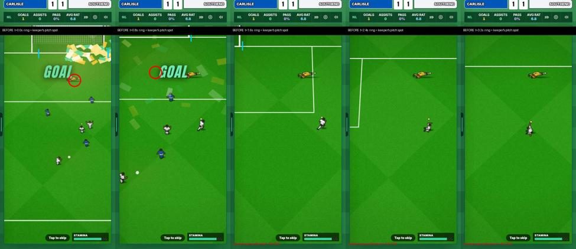
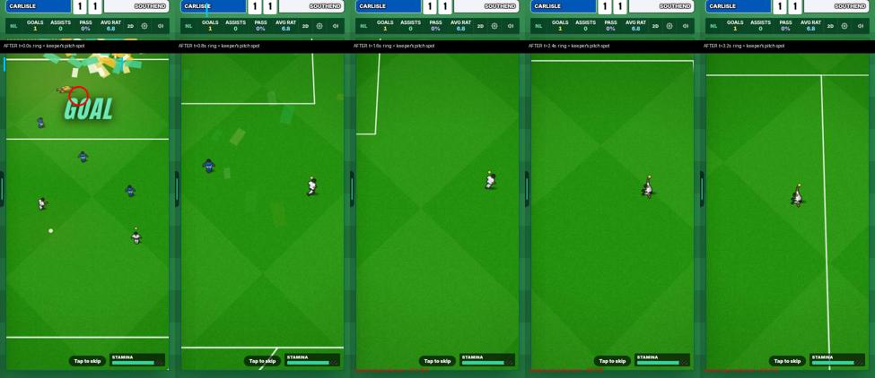
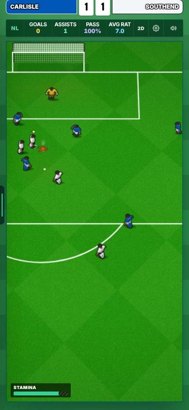
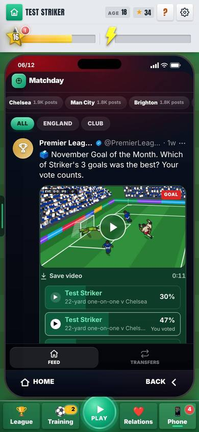
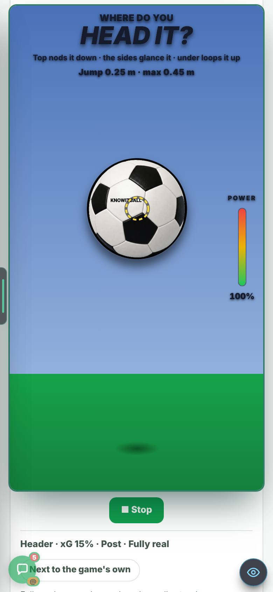
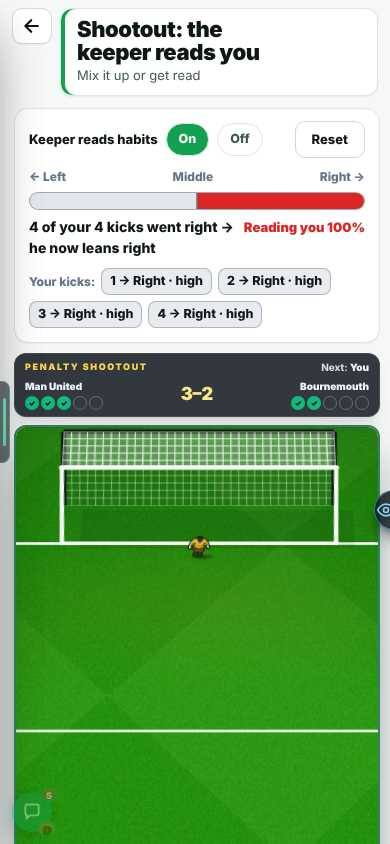
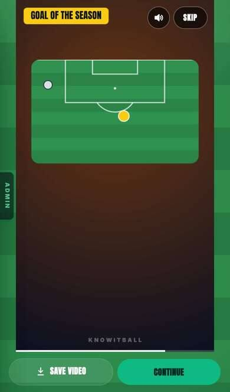
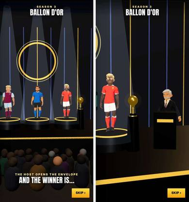

Celebrations, fast feed, Real Goals, season end
On the live site since 24 Oct, switched off for everyone. Admins turn it on in Settings → Updates; the card is now called “Leo’s 26 Oct update” (it was “Leo’s 24 Oct update”), one switch per part.
Made by Leo · 23 Oct 2026, 00:15 UK · built 22–24 Oct by 7 chats, from plan 0.107
Updated 25 Oct, 01:30 UKBicycle kick taken out (Harry is building it). Fixed: after your goal the keeper stayed in the middle of the screen while the camera followed you; now he stays by the goal.
CHECK THESE
Turn the card on first: Settings → Updates → “Leo’s 26 Oct update”. It changes only your phone. Test pages are linked on the card.
About the clips. Every goal is a real shot. Only the weather clips replay one fixed strike, on purpose. 🔊 = the game’s own sound: tap the speaker on the video. The test machine has no graphics card, so about 1 frame in 4 repeats and the ball can look jumpy: that is the recording, not the game (not checked on a phone). Sandbox with no database: players and badges are invented, and a thin “ADMIN” tab shows at the left edge (players never see it).
1 · ADDED: GOAL CELEBRATIONS
After your own goal you run to the nearer corner and do the move you bought in the shop. Tap anywhere to skip. Six moves: Hands Up, Fist Pump, Jump, Roar, Aeroplane, Knee Slide. Goal videos run 2.5 s longer to show it, even if you skipped.
Drawing, from above. Blue is you. The move happens at the corner flag.
Look fora real volley goes in, the run to the corner, the knee slide. It was a 90+1′ big moment, so you hear the heartbeat, the crowd rise, the net and the roar.
More clips (4)
Look forthe real volley goal, then the run with arms out.
Look forthe tap after the goal: the celebration goes at once and the match moves on.
Look forthe run and the slide inside the goal video: live, a tight shot on the slide, two replays.
Look forShop → Store → Roar → buy → “Use after my goals”.
The knee slide: his knees were pressed together, now 33 cm apart.
2 · FIXED: THE KEEPER STAYS BY THE GOAL (25 OCT)
When you run off to celebrate, the keeper stays locked to the middle of the screen while you move.
After his dive, the game kept where he landed as a point on the screen, not a spot on the pitch.
He stays on his spot by the goal and leaves the screen with it. Only the drawing changed: nothing in the match plays differently.
Drawing. The camera follows you (blue) to the right, so the goal slides off to the left. The red ring is where the keeper really is.


3 · ADDED: BIG MOMENTS
At 85′ or later, level or one down, a chance for you brings a heartbeat and a rising crowd. Score it and the end of the shot plays in slow motion, then a roar and a late commentary line. The result is never changed.
Drawing: what happens, top to bottom.
Look forthe heartbeat from the start, slow motion only because the shot was really going in, GOAL, the big roar.
The 4 banner options (you picked none on 26 Oct)
You said the banner looked bad. These were the 3 replacements and “no banner”, over the same real frame. You picked none; it was removed in 0.121.
Look forthe match’s own GOAL letters in amber, beating twice with the heartbeat.
Look fora navy strip with a red 89′ tab wiping in at the top.
Look forthe pitch edges pulse red with the heartbeat; a small chip under the score.

4 · FIXED: SOCIAL FEED, FAST ON A CHEAP PHONE
Posts appear as you reach them, with no empty boxes. Goal videos are made in the background, kept on the phone, and started at full time, so they are ready sooner.
Look forposts are there as you reach them, all the way to “You’re all caught up”.
More clips (1)
Look forthe still shows at once, then the goal plays.
Videos no longer stop 1 to 2 s after the goal. Cup accounts no longer post other competitions’ news.
5 · ADDED: GOAL OF THE MONTH
Your 3 best goals of the month against 2 by others in your league. Fans vote and you vote once. A win adds fans.
Look forwatch a goal, tap vote: the bars move and it says “You voted”.
More pictures (1)

6 · FIXED: AFTER A MATCH, YOUR GOAL PLAYS AT ONCE
You used to wait 20 seconds or more for your goal or the highlights after a match.
If the video is not made yet, the goal plays straight away from its recording, with sound. The finished video then takes over without a jump.
Look forthe goal starts moving after 1.6 s, with sound. The time is shown in the clip.
More clips (3)
Look forthe ring climbs for 9.5 s before the goal plays.
Look forPost Match Reactions → the highlights: playing in 0.13 s.
Look forPhone → Social later on: the highlights play at once.
7 · CHANGED: BICYCLE KICK TAKEN BACK OUT (25 OCT)
Gone: the Bicycle! button, the move in 2D and 3D, its banner, the media posts and its switch. The 15 overhead Real Moments are left out again, as before. Harry’s gold Aerial circle stays.

8 · ADDED: WEATHER AND PITCH
Wind with a direction, rain that makes the ball skid, and each club’s own pitch: lower leagues are worse, the Premier League is always perfect. The real game is unchanged. Each clip replays the same strike, so only the weather changes: watch the small white dot.
Drawing: one long ball, three times. Bends exaggerated so you can see them.
Look forthe same long ball three times: still air, a side gale (it angles away), a head gale (it drops short).
More clips and pictures (4)
Look forwind direction and a gale; on a very poor dry pitch the long ball bends 13 m and the lofted pass stops short.
Look fora lofted pass on a perfect pitch, then on a very poor dry one: it sits down and stops about 9 m sooner.
Look fora low pass: still air, rain (it skids on), heavy rain (it dies early).

9 · ADDED: REAL GOALS
Was 1 path and 50 levels. Now the World Cup and Euro, the five big leagues of 2017/18, Worldies, and 61 Bangers from 2010–2025 (checked twice, 22 corrected). A daily goal with a streak. The home opens in about half a second on a cheap phone (was about 5 s).
Look forthe daily card and the 8 path tiles are on screen at once.
More clips and pictures (7)
Look forPremier League, Worldies and Bangers, each with its own stages and stars.
Look forthe real move, the strike, GOAL, 44% and a star.
Look forscore today’s goal, back home: “🔥 1 day · ✓ Beaten today”.
Look fordrag Charlie Adam’s shot spot and where it went in, then play it.
Look for4 kicks to the left: his read goes 0% → 100%, “he now leans left”.


10 · ADDED: END OF SEASON
Your season video plays every goal, then the Goal of the Season. Stats → Goals lists every goal of your career, with the best 10 in the Hall of Fame. The 3D awards night hands out 5 awards in about 44 s, and you can skip it.
Look fortitle card, goals with the counter, then the Goal of the Season live and slow from behind the net, then the end card.
More clips and pictures (6)
Look forscroll, tap a goal to play it; Hall of Fame → Best goals.
Look forthe Golden Boot nominees, “YOU!”, you walk up and lift it. Then Assist King, which a rival wins.
Look forkinds and weeks, risk, a rehab choice, feed posts, 10 questions with letters.



11 · FIXED: BUG HUNT, 17 FIXED
A refresh used to throw you to Home. Now the Ballon d’Or, the window list, the talks and “Deal agreed” come back. A refresh after “Deal agreed” used to lose the transfer; now it keeps it.
Look forrefresh during the ceremony: it comes back on the Ballon d’Or.
More clips and pictures (6)
Look forrefresh after “Deal agreed”: back on the window list, the move kept.
Look forthrough the tour, play, reload: it does not come back.
Look fortheir offer and the header change together.
Look for“Step 1, 2, 3 of 3”.


A manager is never sacked the summer he wins promotion (Mikey’s area, 3 lines). The first season said 2027/28, now 2026/27. The team sheet showed a different manager. Line-up buttons overlapped. The league dropdown was see-through. “Pick a club” was hard to read. The scout said “The through the gate…”. Offline badges retried about 2,000 times. Clubs up from Step 3 said “Finished 24th”. The admin tab used too much of a slow phone.
12 · CHANGED: HARRY’S AND MIKEY’S AREAS TOUCHED
Harry: the match file (celebrations, big moments, longer goal videos, and where the fallen keeper is drawn) and the keeper’s penalty habits (with no habit he is exactly as before). The core engine changes only for weather, and only on the test page. Mikey: 3 lines for no sack after promotion, and an injuries plan (part 10).
The files
- CanvasMatch.tsx (the match file, sensitive): celebrations, big moments, video length, where the fallen keeper is drawn.
- keeperBrain.ts: penalty habits; unchanged with no habit.
- canvasEngine.ts / ballPhysics.ts (the core engine, sensitive): weather, inert unless the test page sets it.
- manager.ts (Mikey): 3 lines.
- AdminNavPanel.tsx: the admin tab checked about 700 points every 0.5 s; now about 50, in idle time only.
YOUR CALLS
- Big-moment banner: A, B, C or none?Decided: none (26 Oct). Removed in 0.121.
- Harry: keep the live goal player on a timer?It draws a recorded goal on a canvas, with no physics. The one-engine guard flagged its loop, so it runs on a timer instead of being added to the guard’s list of known canvases. Say if you would rather it were listed.
KNOWN ISSUES
11 to 16 hiccups of 0.14–0.17 s on a phone slowed 6×. The aim is none over 0.1 s.
- In the goal video a defender can stand on top of you during the slide (fixed in 0.121).
- The 3D view is not filmed yet: 3 chances per run here, all missed. A blank screen after full time was the filming script, not the game (3D on and off, two runs, no errors).
- The keeper fix in 3D: checked in the code, not seen (3D does not load on the test machine). The goal video was already right (seen).
- Your goal’s own post in the after-match feed gets a video only about half the time (fixed in 0.121).
Big-moment and season video sound measured only. The awards night frame rate is not measured on a phone. No real squads in the sandbox.
- Harry: the match camera is 1 px short at 372×704; a long-range drawing breaks a law; the removed data source’s name is in two old patch notes; 3D training freezes (Head/Volley ↔ Free Roam); two chance tests fail on main after the build-up work.
- Everyone: the save is about 1 MB and is rewritten on every change.
The numbers, if you want them
Feed (production build, phone 6× slower, 150 posts)
- Feed opens: 1.5 → 0.29 s.
- Worst scroll freeze: 0.76 → 0.17 s.
- First video: 47 → 12 s.
- Video, reopened: 1.9 → 0.56 s.
After a match (phone 4× slower, dev server: the worst case)
- Your goal: 9.5 → 1.6 s. Highlights: 3.2 → 0.13 s. Next video: 7.0 → 0.05 s.
- Timed after a real match (Arsenal v Man City, a goal the bot really scored), from the tap to the goal moving. Every case measured is under 3 s.
Celebrations and big moments
- Knee slide: knees 33 cm apart. Goal videos: 2.5 s longer.
- Big moments: slow motion on the last 0.5 s; 14 new late commentary lines.
Weather (test page)
- Real game: 12 of 12 ball fingerprints identical.
- Lab: the long ball bends 13 m in a gale on a very poor dry pitch; a lofted pass stops about 9 m sooner on a very poor dry pitch.
- Found: the live game’s heavy pitch already kills 56 in 100 normal passes.
Real Goals
- 8 paths, 411 levels (was 1 path, 50). 61 Bangers, 22 corrected after two checks.
- Home on a cheap phone: 4.8–5.2 → 0.4–0.55 s.
- Penalty keeper with no habits: 400 decisions and 300 kicks identical to before.
Checks
- Production build passes on the joined branch.
- 422 of 430 star test files pass. The 8 that fail, fail the same way on main (Harry’s chance and camera work, or his old notes): chanceMaker, chanceJudge, freshness, kindMix, leadInGen, longRangeRules, match2dCam, realGoals.
- Four failures from the join (credits, licences, headlines, test-page lock) were found and fixed.